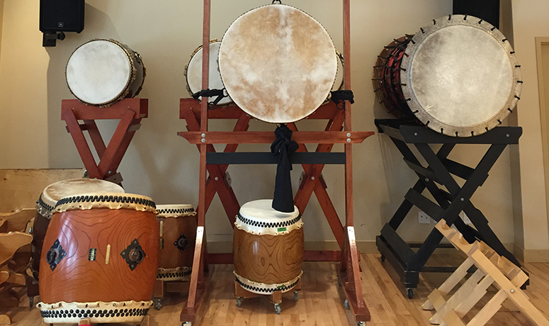
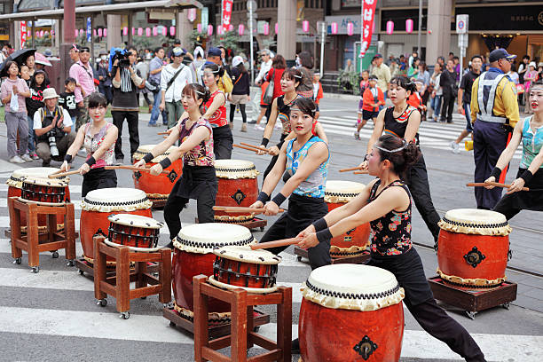
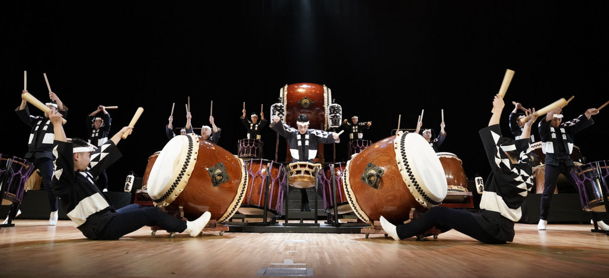

Les tambours Taiko sont généralement fabriqués à partir d'un seul tronc d'arbre, ce qui les rend
très
résistants et capables de produire des sons profonds et puissants. Les tailles des tambours
varient,
allant
des plus petits (comme le Shime Daiko) aux plus grands (comme le Odaiko), et
chaque taille a sa
propre
fonction et sa propre signification.
La tradition du Taiko remonte à plusieurs siècles, mais il est difficile de connaître l'origine
exacte de
l'instrument. Il est probable que le tambour Taiko ait été utilisé pour la première fois dans
les
cérémonies
religieuses shintoïstes, mais il est également possible qu'il ait été influencé par des tambours
similaires
en provenance de Corée et de Chine.
Au fil des siècles, la pratique du Taiko s'est développée et diversifiée. Les tambours Taiko sont
maintenant
utilisés dans une variété de contextes, y compris les festivals, les concerts, les cérémonies
religieuses et
les événements sportifs. Ils sont également utilisés dans des productions théâtrales
traditionnelles
comme
le kabuki et le noh.
La pratique du Taiko est un art complexe et exigeant. Elle nécessite une grande force physique et
une
technique précise pour produire les sons désirés. Les joueurs de Taiko utilisent une variété
d'outils
pour
jouer les tambours, notamment des bâtons (bachi), des baguettes en bois
(chijiriki) et des
maillets
en
coton
(fude).
L'un des aspects les plus importants de la pratique du Taiko est l'esprit d'équipe. Les
joueurs
de
Taiko
travaillent ensemble pour créer des rythmes et des motifs complexes, et il est essentiel que
chaque
joueur
soit en phase avec les autres pour produire un son cohérent et harmonieux.
Le Taiko a également une signification culturelle importante. Il est souvent utilisé dans les
festivals
japonais pour célébrer la communauté et la culture locale, et est considéré comme un
moyen de
renforcer
les
liens entre les gens. Il est également utilisé pour transmettre des messages de paix et de
réconciliation,
comme dans le cas du groupe de Kodo, qui a organisé une tournée pour commémorer les
victimes
de la
guerre et pour encourager la paix dans le monde.
En résumé, le tambour Taiko est un instrument de percussion traditionnel
japonais qui a une
longue
histoire
et une signification culturelle importante. Il est utilisé dans une variété de contextes, de la
musique
traditionnelle à la musique populaire, et nécessite une grande force physique et une technique
précise
pour
produire les sons désirés. La pratique du Taiko est un art complexe et exigeant qui met en avant
l'esprit
d'équipe et la collaboration. Le Taiko est considéré comme un moyen de célébrer la communauté et
la
culture
locale, ainsi que de transmettre des messages de paix et de réconciliation.